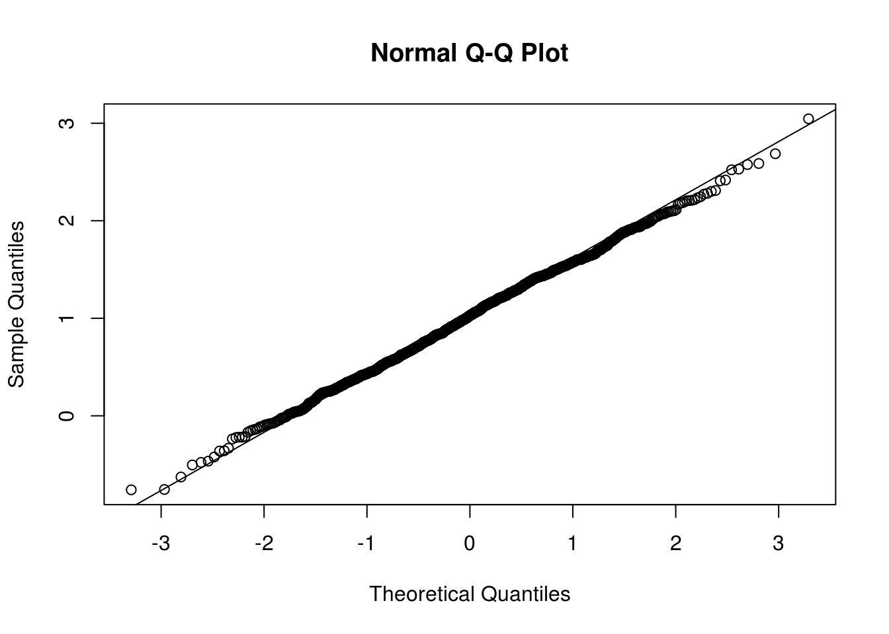
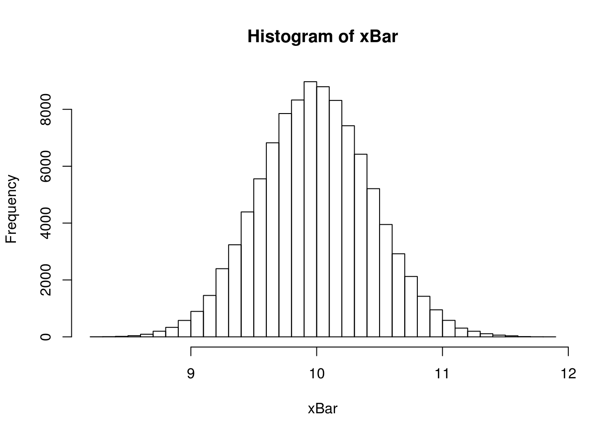

Chapter 3 Introduction
R is both a programming language and software environment for statistical computing, which is free and open-source. To get started, you will need to install two pieces of software:
R, the actual programming language, which can be installed from http://cran.r-project.org/- Chose your operating system, and select the most recent version. (As of writing, 3.3.0.)
- RStudio, an excellent IDE for working with
R, which can be obtained from http://www.rstudio.com/ (Note, you must haveRinstalled to use RStudio. RStudio is simply a way to interact withR.)
R’s popularity is on the rise, and everyday it becomes a better tool for statistical analysis. It even generated this document! (A skill you will learn in this coruse.) To get started, we’ll use R like a simple calculator. Note, in R the # symbol is used for comments. Lines which begin with two, ## will indicate output.
There are many good resoruces for learning R. They are not necessary for this course, but you may find them useful if you would like a deeper understandinf of R:
- Try R from Code School.
- An interactive introduction to the basics of
R. Could be very useful for getting up to speed onR’s syntax.
- An interactive introduction to the basics of
- The Art of
RProgramming by Norman Matloff- Gentle introduction to the programming side of
R. (Whereas we will focus more on the data anlaysis side.) Free electronic version availible through Illinois library.
- Gentle introduction to the programming side of
- Advanced
Rby Hadley Wickham- From the author of several extremely popular
Rpackages. Good follow-up to The Art ofRProgramming. (And more up-to-date material.)
- From the author of several extremely popular
- The R Inferno by Patrick Burns
- Likens learning the tricks of
Rto descending through the levels of hell. Very advanced material, but may be important ifRbecomes a part of your everyday toolkit.
- Likens learning the tricks of
RStudio has a large number of useful keyboard shortcuts. A list of these can be found using a keyboard shortcut, the keyboard shortcut to rule them all:
- On Windows:
Option+Shift+K - On Mac:
Alt+Shift+K
The RStudio team has developed a number of “cheatsheets” for working with both R and RStudio which can be found here or from the help menu inside of RStudio. This one for Base R in particular will summarize many of the concepts in this document.
3.1 Basic Calculations
R’s most most basic funtion is that of a simple calculator.
- Addition, Subtraction, Multiplication and Division
3 + 2## [1] 53 - 2## [1] 13 * 2## [1] 63 / 2## [1] 1.5- Exponents
3 ^ 2## [1] 92 ^ (-3)## [1] 0.125100 ^ (1 / 2)## [1] 10sqrt(1 / 2)## [1] 0.7071068exp(1)## [1] 2.718282- Mathematical Constants
pi## [1] 3.141593exp(1)## [1] 2.718282- Logarithms
log(10) # natural log## [1] 2.302585log10(1000) # base 10 log## [1] 3log2(8) # base 2 log## [1] 3log(16, base = 4) # base 4 log## [1] 2- Trigonometry
sin(pi / 2)## [1] 1cos(0)## [1] 13.2 Getting Help
In using R as a calculator, we have seen a number of functions. sqrt(), exp(), log() and sin() are all R functions. To get documentation about a function in R, simply put a question mark in front of the function name and RStudio will display the documentation, for example:
?log
?sin
?paste
?lmTODO: how to ask for help
3.3 Vectors
Many operations in R make heavy use of vectors. Note that vectors in R are indexed starting at 1.
TODO: Note about [1] in output. Ouput a big vector?
TODO: make a vector TODO: assignment
x <- c(1, 3, 5, 7, 8, 9)
x## [1] 1 3 5 7 8 9TODO: vector sequence
y <- 1:20
y## [1] 1 2 3 4 5 6 7 8 9 10 11 12 13 14 15 16 17 18 19 20TODO: fine control sequence TODO: directly output
(z <- seq(1, 2, 0.1))## [1] 1.0 1.1 1.2 1.3 1.4 1.5 1.6 1.7 1.8 1.9 2.0TODO: add rep
TODO: Accessing elements
x## [1] 1 3 5 7 8 9x[3]## [1] 5x[1:3]## [1] 1 3 5x[-2]## [1] 1 5 7 8 9One of the biggest strengths of R is its use of vectorized operations. (Frequently the lack of understanding of this concept leads of a belief that R is slow. R isn’t the fastest language, but it has a reputation for being slower than it really is.)
x <- 1:10
x + 1## [1] 2 3 4 5 6 7 8 9 10 112 * x## [1] 2 4 6 8 10 12 14 16 18 202 ^ x## [1] 2 4 8 16 32 64 128 256 512 1024sqrt(x)## [1] 1.000000 1.414214 1.732051 2.000000 2.236068 2.449490
## [7] 2.645751 2.828427 3.000000 3.162278log(x)## [1] 0.0000000 0.6931472 1.0986123 1.3862944 1.6094379 1.7917595
## [7] 1.9459101 2.0794415 2.1972246 2.3025851We see that when a function like log() is called on a vector x, a vector is returned which has applied the function to each element of the vector x.
3.4 Matrix Calculations
R can also be used for matrix calculations. Matrices can be created using the matrix function.
TODO: matrix all same “data”" type. “order matters”. has rows and columns
By default the matrix function reorders a vector into columns, but we can also tell R to use rows instead.
x <- 1:9
x## [1] 1 2 3 4 5 6 7 8 9X <- matrix(x, nrow = 3, ncol = 3)
X## [,1] [,2] [,3]
## [1,] 1 4 7
## [2,] 2 5 8
## [3,] 3 6 9Y <- matrix(x, nrow = 3, ncol = 3, byrow = TRUE)
Y## [,1] [,2] [,3]
## [1,] 1 2 3
## [2,] 4 5 6
## [3,] 7 8 9Z <- matrix(0, 2, 4)
Z## [,1] [,2] [,3] [,4]
## [1,] 0 0 0 0
## [2,] 0 0 0 0X## [,1] [,2] [,3]
## [1,] 1 4 7
## [2,] 2 5 8
## [3,] 3 6 9X[1, 2]## [1] 4X[1, ]## [1] 1 4 7X[, 2]## [1] 4 5 6X[2, c(1, 3)]## [1] 2 8Matrices can also be created by combining vectors as columns, using cbind or combining vectors as rows using rbind.
x <- 1:9
rev(x)## [1] 9 8 7 6 5 4 3 2 1rep(1, 9)## [1] 1 1 1 1 1 1 1 1 1cbind(x, rev(x), rep(1, 9))## x
## [1,] 1 9 1
## [2,] 2 8 1
## [3,] 3 7 1
## [4,] 4 6 1
## [5,] 5 5 1
## [6,] 6 4 1
## [7,] 7 3 1
## [8,] 8 2 1
## [9,] 9 1 1rbind(x, rev(x), rep(1, 9))## [,1] [,2] [,3] [,4] [,5] [,6] [,7] [,8] [,9]
## x 1 2 3 4 5 6 7 8 9
## 9 8 7 6 5 4 3 2 1
## 1 1 1 1 1 1 1 1 1R can then be used to perform matrix calculations.
x <- 1:9
y <- 9:1
X <- matrix(x, 3, 3)
Y <- matrix(y, 3, 3)
X## [,1] [,2] [,3]
## [1,] 1 4 7
## [2,] 2 5 8
## [3,] 3 6 9Y## [,1] [,2] [,3]
## [1,] 9 6 3
## [2,] 8 5 2
## [3,] 7 4 1X + Y## [,1] [,2] [,3]
## [1,] 10 10 10
## [2,] 10 10 10
## [3,] 10 10 10X - Y## [,1] [,2] [,3]
## [1,] -8 -2 4
## [2,] -6 0 6
## [3,] -4 2 8X * Y## [,1] [,2] [,3]
## [1,] 9 24 21
## [2,] 16 25 16
## [3,] 21 24 9X / Y## [,1] [,2] [,3]
## [1,] 0.1111111 0.6666667 2.333333
## [2,] 0.2500000 1.0000000 4.000000
## [3,] 0.4285714 1.5000000 9.000000Note that X * Y is not matrix multiplication. It is element by element multiplication. (Same for X / Y). Instead, matrix multiplication uses %*%. t() gives the transpose of a matrix, and solve() returns the inverse of a matrix.
X %*% Y## [,1] [,2] [,3]
## [1,] 90 54 18
## [2,] 114 69 24
## [3,] 138 84 30t(X)## [,1] [,2] [,3]
## [1,] 1 2 3
## [2,] 4 5 6
## [3,] 7 8 9Z <- matrix(c(9, 2, -3, 2, 4, -2, -3, -2, 16), 3, byrow = T)
Z## [,1] [,2] [,3]
## [1,] 9 2 -3
## [2,] 2 4 -2
## [3,] -3 -2 16solve(Z)## [,1] [,2] [,3]
## [1,] 0.12931034 -0.05603448 0.01724138
## [2,] -0.05603448 0.29094828 0.02586207
## [3,] 0.01724138 0.02586207 0.06896552X <- matrix(1:6, 2, 3)
X## [,1] [,2] [,3]
## [1,] 1 3 5
## [2,] 2 4 6dim(X)## [1] 2 3rowSums(X)## [1] 9 12colSums(X)## [1] 3 7 11rowMeans(X)## [1] 3 4colMeans(X)## [1] 1.5 3.5 5.5diag(Z)## [1] 9 4 16diag(1:5)## [,1] [,2] [,3] [,4] [,5]
## [1,] 1 0 0 0 0
## [2,] 0 2 0 0 0
## [3,] 0 0 3 0 0
## [4,] 0 0 0 4 0
## [5,] 0 0 0 0 5diag(5)## [,1] [,2] [,3] [,4] [,5]
## [1,] 1 0 0 0 0
## [2,] 0 1 0 0 0
## [3,] 0 0 1 0 0
## [4,] 0 0 0 1 0
## [5,] 0 0 0 0 13.5 Distributions
When working with different statistical distributions, we often want to make probabilistic statements based on the distribution.
We typically want to know one of four things:
- The density (pdf) value at a particular value of
x. - The distribution (cdf) value at a particular value of
x. - The quantile
xvalue corresponding to a particular probability. - A random value from a particular distribution.
This used to be done with statistical tables printed in the back of textbooks. Now, R has functions for obtaining density, distribution, quantile and random values.
The general naming structure of the relevant R functions is:
dnamecalculates density (pdf) value at inputx.pnamecalculates distribution (cdf) value at inputx.qnamecalculates quantilexvalue at input probability.rnamegenerates a random value from a particular distribution.
Note that name represents the name of the given distribution.
For example, to calculate the value of the pdf for a \(N(2, 25)\) for x = 3, use:
dnorm(3, mean = 2, sd = 5)## [1] 0.07820854Or, to calculate the value of the cdf for a \(N(2, 25)\) for x = 3, use:
pnorm(3, mean = 2, sd = 5)## [1] 0.5792597Or, to calculate the quantile for probability 0.975, use:
qnorm(0.975, mean = 2, sd = 5)## [1] 11.79982Lastly, to generate a random sample of size n = 10, use:
rnorm(10, mean = 2, sd = 5)## [1] 6.426670 -1.444457 5.762085 -1.646382 5.799111 5.950891
## [7] -1.078736 5.976264 5.251992 7.786781These functions exist for many other distributions, including but not limited to:
| Command | Distribution |
|---|---|
*binom |
Binomial |
*t |
t |
*pois |
Poisson |
*f |
F |
*chisq |
Chi-Squared |
Where * can be d, p, q, and r.
3.6 Programming Basics
3.6.1 Logical Operators
| Operator | Summary |
|---|---|
< |
Less than |
> |
Greater than |
<= |
Less than or equal to |
>= |
Greater than or equal to |
== |
Equal to |
!= |
Not equal to |
!x |
NOT x |
x | y |
x OR y |
x & y |
x AND y |
In R, logical operators are vectorized.
heights <- c(110, 120, 115, 136, 205, 156, 175)
weights <- c(64, 67, 62, 60, 77, 70, 66)
heights < 121 | heights == 156## [1] TRUE TRUE TRUE FALSE FALSE TRUE FALSEweights[heights > 150]## [1] 77 70 66In R, the if/else syntax is:
if (...) {
some R code
} else {
more R code
}For example,
x <- 1
y <- 3
if (x > y) {
z <- x * y
print("x is larger than y")
} else {
z <- x + 5 * y
print("x is less than or equal to y")
}## [1] "x is less than or equal to y"z## [1] 16TODO: ifelse
Now a for loop example,
x <- 11:15
for (i in 1:5) {
x[i] <- x[i] + 1
}
x## [1] 12 13 14 15 16Note that this for loop is very normal in many programming languages, but not in R. In R we would not use a loop, instead we would simply use a vectorized operation:
x <- 11:15
x <- x + 1
x## [1] 12 13 14 15 16Lastly, we can write our own functions in R. For example,
standardize <- function(x) {
m <- mean(x)
std <- sd(x)
result <- (x - m) / std
result
}
x <- rnorm(10, 2, 25)
standardize(x)## [1] 0.42447888 -0.40845837 0.26566722 -0.38447857 0.08461638
## [6] -1.04263632 -0.13719885 -1.59904436 2.05152173 0.74553227
TODO: function with arguments, control flow, if based return, how return works
get_sd <- function(y, biased = FALSE) {
n <- length(y)
if (biased) {
std <- sqrt((1 / n) * sum((y - mean(y)) ^ 2))
} else {
std <- sqrt((1 / (n - 1)) * sum((y - mean(y)) ^ 2))
}
std
}TODO: Potentially save this for the SLR document, since it is already somewhat there.
3.7 Data Frames
TODO: data frames. have observations and variables
3.8 Importing Data
TODO: read() or RStudio
3.9 Scatter Plots
3.10 Hypothesis Tests in R
3.10.1 One Sample \(t\) Test: Review
Suppose \(x_{i} \sim \mathrm{N}(\mu,\sigma^{2})\) and we want to test \(H_{0}: \mu = \mu_{0}\) versus \(H_{1}: \mu \neq \mu_{0}.\)
Assuming \(\sigma\) is unknown, use the one-sample Student’s \(t\) test statistic:
\[ T=\displaystyle\frac{\bar{x}-\mu_{0}}{s/\sqrt{n}}\sim t_{n-1} \]
where \(\bar{x}=\displaystyle\frac{\sum_{i=1}^{n}x_{i}}{n}\) and \(s=\sqrt{\displaystyle\frac{\sum_{i=1}^{n}(x_{i}-\bar{x})^{2}}{n-1}}\)
A \(100(1-\alpha)\)% CI for \(\mu\) is given by
\[ \bar{x}\pm t_{n-1}^{(\alpha/2)}\displaystyle\frac{s}{\sqrt{n}} \]
where \(t_{n-1}^{(\alpha/2)}\) is the critical value such that \(P\left(T>t_{n-1}^{(\alpha/2)}\right)=\alpha/2\) for \(n-1\) degrees of freedom.
3.10.2 One Sample \(t\) Test: Example
A store sells ``16-ounce’’ boxes of Captain Crisp cereal. A random sample of 9 boxes was taken and weighed. The results were
\[ 15.5 \quad 16.2 \quad 16.1 \quad 15.8 \quad 15.6 \quad 16.0 \quad 15.8 \quad 15.9 \quad 16.2 \]
ounces. Assume the weight of cereal in a box is normally distributed.
a) Compute the sample mean \(\bar{x}\) and the sample standard deviation \(s\).
\[ \begin{split} \bar{x} &= \frac{1}{n}\sum_{i=1}^{n}x_{i}=(1/9)(15.5+\cdots+16.2) = (1/9)(143.1)=\textbf{15.9}\\ s^{2} &=\frac{1}{n-1}\sum_{i=1}^{n}(x_{i}-\bar{x})^{2}=\frac{1}{n-1}\left[\sum_{i=1}^{n}x_{i}^{2} - n \bar{x}^{2}\right]\\ &= (1/8)\left[2275.79 - 9(15.9^2)\right] = (1/8)(0.5) = 0.0625\\ s &= \sqrt{0.0625} = \textbf{0.25} \end{split} \]
x <- c(15.5, 16.2, 16.1, 15.8, 15.6, 16.0, 15.8, 15.9, 16.2)
mean(x)## [1] 15.9sd(x)## [1] 0.25b) Construct a \(95\%\) confidence interval for the overall average weight of boxes of cereal.
\(t_{n-1}^{(\alpha/2)}=t_{8}^{(0.025)}=2.306\), so the 95% CI for the average weight of a cereal box is:
\[ \begin{split} 15.9 \pm 2.306\sqrt{\frac{0.0625}{9}} & = [15.708, 16.092] \end{split} \]
Or, in R:
t.test(x, alternative = c("two.sided"), conf.level = 0.95)##
## One Sample t-test
##
## data: x
## t = 190.8, df = 8, p-value = 6.372e-16
## alternative hypothesis: true mean is not equal to 0
## 95 percent confidence interval:
## 15.70783 16.09217
## sample estimates:
## mean of x
## 15.9Or if we only wanted to display the interval:
tt <- t.test(x, alternative = c("two.sided"), conf.level = 0.95)
tt$conf.int## [1] 15.70783 16.09217
## attr(,"conf.level")
## [1] 0.95Or, we could calculate it “by hand” in R.
qt(0.975, 8)## [1] 2.306004c(mean(x) - qt(0.975, 8) * sd(x) / sqrt(9),
mean(x) + qt(0.975, 8) * sd(x) / sqrt(9))## [1] 15.70783 16.09217c) The company that makes Captain Crisp cereal claims that the average weight of its box is at least 16 ounces. Use a 0.05 level of significance to test the company’s claim. What is the p-value of this test?
To test \(H_{0}: \mu \geq 16\) versus \(H_{1}: \mu < 16\), the test statistic is
\[ \begin{split} T=\frac{15.9-16}{\sqrt{0.0625/9}}=-1.2 \end{split} \]
We know that \(T\sim t_{8}\), so the rejection reject is \(T < -t_{n-1}^{(\alpha)}=-t_{8}^{(0.05)}= -1.860.\)
Therefore, we do NOT reject the null hypothesis at the \(\alpha=.05\) level. We could have also bounded the p-value of the test using the \(t\) table.
t.test(x, mu = 16, alternative = c("less"), conf.level = 0.95)##
## One Sample t-test
##
## data: x
## t = -1.2, df = 8, p-value = 0.1322
## alternative hypothesis: true mean is less than 16
## 95 percent confidence interval:
## -Inf 16.05496
## sample estimates:
## mean of x
## 15.93.10.3 Two Sample \(t\) Test: Review
Suppose \(x_{i}\sim\mathrm{N}(\mu_{x},\sigma^{2})\) and \(y_{i}\sim\mathrm{N}(\mu_{y},\sigma^{2}).\)
Want to test \(H_{0}: \mu_{x}-\mu_{y} = \mu_{0}\) versus \(H_{1}: \mu_{x}-\mu_{y} \neq \mu_{0}.\)
Assuming \(\sigma\) is unknown, use the two-sample Student’s \(t\) test statistic:
\[ T=\frac{(\bar{x}-\bar{y})-\mu_{0}}{s_{p}\sqrt{\frac{1}{n}+\frac{1}{m}}}\sim t_{n+m-2} \]
where \(\displaystyle\bar{x}=\frac{\sum_{i=1}^{n}x_{i}}{n}\), \(\displaystyle\bar{y}=\frac{\sum_{i=1}^{m}y_{i}}{m}\), and \(s_p^2 = \displaystyle\frac{(n-1)s_1^2+(m-1)s_2^2}{n+m-2}\)
A \(100(1-\alpha)\)% CI for \(\mu_{x}-\mu_{y}\) is given by
\[ (\bar{x}-\bar{y})\pm t_{n+m-2}^{(\alpha/2)}\left(s_{p}\textstyle\sqrt{\frac{1}{n}+\frac{1}{m}}\right) \]
where \(t_{n+m-2}^{(\alpha/2)}\) is critical \(t_{n+m-2}\) value such that \(P\left(T>t_{n+m-2}^{(\alpha/2)}\right)=\alpha/2\).
3.10.4 Two Sample \(t\) Test: Example
Assume that the distributions of \(X\) and \(Y\) are \(\mathrm{N}(\mu_{1},\sigma^{2})\) and \(\mathrm{N}(\mu_{2},\sigma^{2})\), respectively. Given the \(n = 6\) observations of \(X\),
\[ 70, \qquad 82, \qquad 78, \qquad 74, \qquad 94, \qquad 82 \]
and the \(m = 8\) observations of \(Y\),
\[ 64, \qquad 72, \qquad 60, \qquad 76, \qquad 72, \qquad 80, \qquad 84, \qquad 68 \]
find the p-value for the test \(H_{0}: \mu_{1} = \mu_{2}\) versus \(H_{1}: \mu_{1} > \mu_{2}\).
First, note that the sample means and variances are given by
\[ \begin{split} \bar{x} &= (1/6)\textstyle\sum_{i=1}^{6}x_{i}=(1/6)480=80\\ \bar{y} &= (1/8)\textstyle\sum_{i=1}^{8}y_{i}=(1/8)576=72\\ s_{x}^{2} &= (1/5)\textstyle\sum_{i=1}^{6}(x_{i}-\bar{x})^{2}=(1/5)344=68.8\\ s_{y}^{2} &= (1/7)\textstyle\sum_{i=1}^{8}(y_{i}-\bar{y})^{2}=(1/7)448=64\\ \end{split} \]
which implies that the pooled variance estimate is given by
\[ \begin{split} s_{p}^{2} &= \frac{(n-1)s_{x}^{2}+(m-1)s_{y}^{2}}{n+m-2}\\ &= \frac{344+448}{12}\\ &=66 \end{split} \]
Thus, the relevant \(t\) test statistic is given by
\[ \begin{split} T &= \frac{(\bar{x}-\bar{y})-\mu_{0}}{s_{p}\sqrt{\frac{1}{n}+\frac{1}{m}}}\\ &= \frac{(80-72)-0}{\sqrt{66}\sqrt{\frac{1}{6}+\frac{1}{8}}}\\ &= 1.82337 \end{split} \]
Note that \(T\sim t_{12}\), so
\[ 0.025 < p-value < 0.05 \]
since
\[ t_{12}^{(0.025)} = 1.782< 1.82337 < t_{12}^{(0.05)} = 2.179. \]
x <- c(70, 82, 78, 74, 94, 82)
y <- c(64, 72, 60, 76, 72, 80, 84, 68)
t.test(x, y, alternative = c("greater"), var.equal = TRUE)##
## Two Sample t-test
##
## data: x and y
## t = 1.8234, df = 12, p-value = 0.04662
## alternative hypothesis: true difference in means is greater than 0
## 95 percent confidence interval:
## 0.1802451 Inf
## sample estimates:
## mean of x mean of y
## 80 72Or, performing the calculations by hand' inR`:
sPooled2 <- ((6 - 1) * var(x) + (8 - 1) * var(y)) / (6 + 8 - 2)
sPooled2## [1] 66test_stat <- (mean(x) - mean(y)) / sqrt(sPooled2 * (1 / 6 + 1 / 8))
test_stat## [1] 1.8233691 - pt(test_stat, 6 + 8 - 2)## [1] 0.04661961
3.11 Simulation in R
3.11.1 Paired Differences
Consider the model:
\[ \begin{split} X_{11}, X_{12}, \ldots, X_{1n} \sim N(\mu_1,\sigma^2)\\ X_{21}, X_{22}, \ldots, X_{2n} \sim N(\mu_2,\sigma^2) \end{split} \]
Assume that \(\mu_1 = 6\), \(\mu_2 = 5\), \(\sigma^2 = 4\) and \(n = 25\).
Let \(\bar{X_1} = \displaystyle\frac{1}{n}\sum_{i=1}^{n}X_{1i}\), \(\bar{X_2} = \displaystyle\frac{1}{n}\sum_{i=1}^{n}X_{2i}\) and \(D = \bar{X_1} - \bar{X_2}.\)
Find \(P(0 < D < 2)\).
\[ D = \bar{X_1} - \bar{X_2} \sim N\left(\mu_1-\mu_2, \displaystyle\frac{\sigma^2}{n}+\displaystyle\frac{\sigma^2}{n}\right) = N\left(6-5, \displaystyle\frac{4}{25}+\displaystyle\frac{4}{25}\right) \]
So,
\[ D \sim N(1, 0.32) \]
Thus,
\[ P(0 < D < 2) = P ( – 1.77 < Z < 1.77 ) = 0.9616 - 0.0384 = 0.9232. \]
z <- 1 / sqrt(0.32)
pnorm(z) - pnorm(-z)## [1] 0.9229001Empirical distribution of \(D\)
Generate \(S = 1000\) datasets for each of group 1 and group 2. For each of the \(s = 1 : 1000\) datasets, compute \(d_s = \bar{x}_{1s} - \bar{x}_{2s}\). Make a histogram for the \(1000\) values of \(d\). What is the proportion of values of \(d\) (among the 1000 values of \(d\) generated) that are between 0 and 2?
set.seed(42)
sampleSize <- 25
mu1 <- 6
mu2 <- 5
std <- 2
samples <- 1000
count <- 0
differences <- c(1:samples)
for (i in 1:samples) {
x1 <- rnorm(sampleSize, mu1, std)
x2 <- rnorm(sampleSize, mu2, std)
differences[i] <- mean(x1) - mean(x2)
if ((differences[i] > 0) & (differences[i] < 2)) {
count <- count + 1
}
}
count / samples## [1] 0.923mean(0 < differences & differences < 2)## [1] 0.923hist(differences, breaks = 20)
qqnorm(differences)
qqline(differences)
3.11.2 Distribution of \(\bar{x}\)
sampleSize <- 50
mu <- 10
samples <- 100000
xBar <- rep(0, samples)
for(i in 1:samples){
xBar[i] <- mean(rpois(sampleSize, lambda = mu))
}
hist(xBar, breaks = 50)
c(mean(xBar), mu)## [1] 10.00015 10.00000c(sd(xBar), sqrt(mu) / sqrt(sampleSize))## [1] 0.4470015 0.4472136mean(xBar > mu - 2 * sqrt(mu) / sqrt(sampleSize) &
xBar < mu + 2 * sqrt(mu) / sqrt(sampleSize))## [1] 0.95389histgm <- hist(xBar, breaks = 50, plot = FALSE)
plot(
histgm,
col = ifelse(
histgm$breaks > mu - 2 * sqrt(mu) / sqrt(sampleSize) &
histgm$breaks < mu + 2 * sqrt(mu) / sqrt(sampleSize),
"red",
"gray50"
)
)